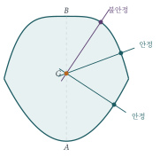

STEP III 2025, 문제 9
다음으로 넘어가기 전에 문제를 먼저 읽어 보자. 이 문제는 OCR에서 내려받을 수 있는 2025년 STEP 문제지 모음(zip 파일)의 STEP III 문제지에 있다: www.ocr.org.uk/Images/750486-2025-past-papers.zip
도입
럭비공을 탁자 위에 놓으면 옆으로 누운 채 자리를 잡는다. 끝을 아래로 하여 세워도 아주 조심스럽게 하면 그대로 균형을 잡지만, 살짝만 건드려도 넘어진다. 탁자 위에 놓인 모든 강체(rigid body)에는 몇 개의 평형 위치(equilibrium position)가 있으며, 어떤 것은 안정(stable)하고 어떤 것은 불안정(unstable)하다. 어떤 평형 위치가 존재하는지는 오직 물체의 모양과 무게중심(centre of mass)에 따라서만 정해진다. 물체는 평형 위치를 몇 개나 가질 수 있을까? 최소 몇 개일까?
이 문제에서는 위쪽 절반은 둥근 돔이고 아래쪽 절반은 뾰족한, 팽이 모양의 입체를 만들고, 이 입체가 똑바로 서거나 거꾸로 서는 것 말고도 서로 다른 세 가지 기울기로 놓일 수 있음을 보인다. 핵심 아이디어는 단 하나의 기하학적 조건이다. 물체가 표면의 한 점으로 정지해 있을 수 있는 것은 그 점에서 표면의 법선(normal)이 무게중심을 지날 때, 그리고 그때뿐이다. 그 배후에는 최근의 발견이 있다. 안정한 위치와 불안정한 위치를 하나씩만 가지는 볼록(convex) 도형인 괴뫼츠(Gömböc)이다.
시작하기 전에
입체가 곡면 위의 한 점 \(X\)에서만 탁자에 닿은 채 놓여 있다. 이 입체에 작용하는 힘은 무게(무게중심 \(G\)에 작용한다)와 \(X\)에서의 수직항력(reaction)이다. 언제 이 힘들이 평형을 이루는가?
탁자는 \(X\)에서 표면에 접하고, 수직항력은 \(X\)에서 탁자에 수직으로, 즉 표면의 법선 방향으로 작용한다. 무게는 \(G\)를 지나 연직 방향으로 작용한다. 두 힘이 평형을 이루려면 같은 직선 위에서 작용해야 하므로, \(X\)를 지나는 연직선, 곧 \(X\)에서의 법선이 \(G\)를 지나야 한다. 따라서 물체가 \(X\)에서 닿은 채 정지할 수 있는 것은 \(X\)에서의 법선이 \(G\)를 지날 때, 그리고 그때뿐이다.
차근차근 풀기
단계 1 무게중심
입체를 반지름 \(x\), 두께 \(\delta x\), 높이 \(y\)인 얇은 원통 껍질(cylindrical shell)로 잘라 보자. 껍질 하나의 부피는 얼마이고, 그 무게중심은 어디에 있는가?
\(y = \frac{r^n - x^n}{r^{n-1}}\)일 때, 껍질 하나의 부피는 \(2\pi xy\,\delta x\)이고 무게중심은 높이 \(\frac y2\)에 있다. 따라서 \[V = \int_0^r 2\pi xy\,\mathrm{d}x = \frac{2\pi}{r^{n-1}}\Bigl(\frac{r^{n+2}}{2} - \frac{r^{n+2}}{n + 2}\Bigr) = \frac{n\pi r^3}{n + 2},\] 이고, 밑면에 대한 모멘트(moment)는 \[\begin{aligned} \int_0^r 2\pi x\cdot\frac{y^2}{2}\,\mathrm{d}x &= \frac{\pi}{r^{2n-2}}\int_0^r x(r^n - x^n)^2\,\mathrm{d}x \\ &= \pi r^4\Bigl(\frac12 - \frac{2}{n + 2} + \frac{1}{2n + 2}\Bigr) = \frac{n^2\pi r^4}{2(n + 1)(n + 2)}. \end{aligned}\] 이다. (괄호 안이 이렇게 간단해지는 것은 \((n + 1)(n + 2) - 4(n + 1) + (n + 2) = n^2\)이기 때문이다.) 나누면 \[\bar y = \frac{nr}{2(n + 1)}. \qed\] 이다. \(n = 2\)(회전 포물면(paraboloid))일 때 이 값은 \(\frac r3\)으로, 잘 알려진 결과이다. \(n \to \infty\)이면 입체는 원기둥이 되고 \(\bar y \to \frac r2\)이다.
단계 2 법선이 축과 만나는 곳
\(x = rp\)에서 곡선의 기울기는 \(-\frac{nx^{n-1}}{r^{n-1}} = -np^{n-1}\)이므로, 법선의 기울기는 \(\frac{1}{np^{n-1}}\)이다. 법선을 따라 점 \(\bigl(rp, r(1 - p^n)\bigr)\)에서 \(y\)축까지 움직이면 \(x\)는 \(rp\)만큼, \(y\)는 \(\frac{rp}{np^{n-1}} = \frac{r}{np^{n-2}}\)만큼 줄어든다. 따라서 \[Y = r\Bigl(1 - p^n - \frac{1}{np^{n-2}}\Bigr). \qed\]
\(n = 4\)일 때 \(Y = r\bigl(1 - p^4 - \frac{1}{4p^2}\bigr)\)이다. 이 값은 어디에서 가장 큰가? \(p \to 0\)일 때와 \(p = 1\)일 때는 어떻게 되는가?
\(p^6 = \frac18\), 즉 \(p^2 = \frac12\)일 때 \(\frac{\mathrm{d}Y}{\mathrm{d}p} = r\bigl(-4p^3 + \frac{1}{2p^3}\bigr) = 0\)이다. 이때 \(Y = r\bigl(1 - \frac14 - \frac12\bigr) = \frac14r\)이다.■
\(p \to 0\)이면 \(Y \to -\infty\)이다(꼭대기 근처에서 돔은 매우 평평하여 법선이 거의 연직이므로, 축과 아주 아래쪽에서 만난다). \(p = 1\)에서는 \(Y = -\frac14r\)이다. 따라서 \(p\)가 \(0\)에서 \(1\)까지 변할 때 \(Y\)는 \(-\infty\)에서 \(\frac14r\)까지 증가했다가 다시 \(-\frac14r\)로 감소한다.
단계 3 팽이
소문항 (iii)의 입체는 뒤집힌 회전 포물면(\(n = 2\)) 위에 돔(\(n = 4\))을 얹은 것이다. 이 입체의 무게중심은 어디에 있는가?
1단계에 의해 돔의 부피는 \(\frac{2\pi r^3}{3}\)이고 무게중심은 \(\frac{2r}{5}\)에 있다. 회전 포물면의 부피는 \(\frac{\pi r^3}{2}\)이고, 거꾸로 놓여 있으므로 무게중심은 \(-\frac r3\)에 있다. 따라서 \[\bar y = \frac{\frac23\cdot\frac25 - \frac12\cdot\frac13}{\frac23 + \frac12}\,r = \frac{\frac{4}{15} - \frac16}{\frac76}\,r = \frac{3r}{35}.\] 이다. \(G\)는 \(\bigl(0, \frac{3r}{35}\bigr)\)에 있으며, 가장 넓은 부분보다 약간 위에 있다.
단계 4 평형 위치의 개수 세기
기울어진 평형 위치가 되려면 (\(A\)나 \(B\)가 아닌) 점 가운데 그 점의 법선이 \(G\)를 지나는 점이 있어야 한다. 표면의 각 부분에서, 법선이 높이 \(\frac{3r}{35}\)에서 축과 만나는 점은 몇 개인가?
돔. 돔의 법선이 축과 만나는 높이 \(Y\)는 \(-\infty\)에서 \(\frac14r\)까지 증가했다가 \(-\frac14r\)로 감소한다. \(-\frac14r < \frac{3r}{35} < \frac14r\)이므로, 중간값 정리(intermediate value theorem)에 의해 값 \(\frac{3r}{35}\)은 증가하는 구간에서 한 번, 감소하는 구간에서 한 번 나타난다. 즉 두 점이다.
뾰족한 밑부분. \(n = 2\)인 경우의 소문항 (ii)의 결과를 \(x\)축에 대하여 대칭이동하면, 매개변수가 \(p\)인 점에서의 법선은 축과 \(-r\bigl(1 - p^2 - \frac12\bigr) = r\bigl(p^2 - \frac12\bigr)\)에서 만나며, 이 값은 \(-\frac12r\)에서 \(\frac12r\)까지 증가한다. 이 값은 \(p^2 = \frac{41}{70}\)에서 정확히 한 번 \(\frac{3r}{35}\)과 같아진다.
이 세 점은 각각 하나의 평형 위치를 주며, 세 법선이 축과 이루는 각이 모두 다르므로 \(\overrightarrow{AB}\)는 연직선과 0이 아닌 서로 다른 세 각을 이룬다(그림 11.8.1).■

돌아보기
물리적 조건을 기하로 바꾸기. 평형 조건은 “법선이 \(G\)를 지난다”가 되었다.
풀지 않고 존재 보이기. 우리는 끝내 각을 구하지 않았다. 함수 \(Y(p)\)의 모양과 함께 중간값 정리를 쓰면 그런 각이 몇 개인지 알 수 있었다.
일반적인 결과 다시 쓰기. 일반적인 \(n\)에 대한 소문항 (ii)의 결과로 소문항 (iii)의 표면의 두 부분을 모두 다룰 수 있었다.
숨은 수학
임계점으로서의 평형 위치
입체가 점 \(X\)로 정지해 있을 때, 탁자로부터 \(G\)의 높이는 \(G\)에서 \(X\)에서의 접평면(tangent plane)까지의 거리이며, 볼록한 물체에서 \(GX\)가 법선 방향이면 이 거리는 \(|GX|\)이다. 일반적으로 평형 위치는 \(G\)에서 표면까지 거리의 임계점(critical point)이다. \(|GX|\)가 정상값을 가지는 점 \(X\)는 바로 그 점의 법선이 \(G\)를 지나는 점이다. 안정한 평형 위치는 이 거리의 극소점(local minimum)이고(\(G\)가 가능한 한 낮다), 불안정한 평형 위치는 극대점(local maximum)이나 안장점(saddle point)이다.
단면을 따라 \(A\)에서 \(B\)까지 돌아가면 \(G\)로부터의 거리는 다음과 같이 변한다. \(A\)에서는 크고(극대: 뾰족한 끝으로 균형을 잡고 있으므로 불안정), 밑부분의 기울어진 점에서는 더 작고(극소, 안정), 테두리에서는 더 크고, 돔의 아래쪽 기울어진 점에서는 더 작고(안정), 위쪽 점에서는 더 크며(불안정), \(B\)에서는 더 작다(안정: 돔의 꼭대기로 놓여 있다). 그림에서 보듯이 극소와 극대는 번갈아 나타나야 한다. (사실 문제에서 세지 않는 평형 위치가 하나 더 있다. 입체는 표면의 법선이 하나로 정해지지 않는 날카로운 테두리 위에서도 불안정하게 균형을 잡을 수 있다.)
괴뫼츠
볼록한 물체는 최소 몇 개의 평형 위치를 가질 수 있을까? 어떤 물체든 적어도 하나의 안정한 위치와 하나의 불안정한 위치를 가진다. 바로 표면에서 \(G\)에 가장 가까운 점과 가장 먼 점이다. 밀도가 균일한 2차원 볼록 도형은 항상 적어도 네 개를 가진다(거리의 극소 둘과 극대 둘이 번갈아 나타난다). 1995년에 블라디미르 아르놀트(Vladimir Arnold)는 밀도가 균일한 3차원 볼록 물체가 단 두 개, 즉 안정한 위치 하나와 불안정한 위치 하나만 가질 수 있는지 물었다. 2006년에 Gábor Domokos와 Péter Várkonyi가 그런 물체를 만들어 냈는데, 이것이 괴뫼츠이다. 이 물체는 어떤 자세로 내려놓아도 구르고 흔들리다가 단 하나뿐인 안정한 위치에 이른다. 나중에 Domokos는 어떤 거북의 등딱지가 이 모양에 가깝다는 것을 알아차렸는데, 이 모양 덕분에 거북은 뒤집혔을 때 몸을 다시 바로 세우기가 쉬워진다.
물체의 안정성에 대한 연구는 아르키메데스(Archimedes)까지 거슬러 올라간다. 그는 부체에 관하여(On Floating Bodies)에서 물에 뜬 회전 포물면(배 선체의 모형)이 언제 똑바로 선 채 안정하고 언제 뒤집히는지를 그 모양과 밀도로 분석했다. 오직 기하만으로 얻어 낸 그의 답에는 여기에서 쓴 것과 똑같은 종류의 무게중심과 법선 계산이 들어 있다. 조선 기술자들은 지금도 메타센터(metacentre)라는 형태로 그의 아이디어를 사용한다. 부력 중심(centre of buoyancy)을 지나는 연직선이 배의 축과 만나는 점이 무게중심보다 위에 있으면 배는 안정하다.
사고 기술
평형 위치는 퍼텐셜 에너지(potential energy)의 정상점(stationary point)이고, 안정한 평형 위치는 그 극소점이다. 정상점을 직접 구하는 대신 그 개수를 세어라.
여기서 퍼텐셜 에너지는 \(G\)의 높이, 곧 \(G\)에서 표면까지의 거리에 비례했다. 대학에서는 이 관점이 역학, 화학(분자는 에너지의 극소점에 자리 잡는다), 그리고 위상수학(topology)을 관통한다. 위상수학에서 모스 이론(Morse theory)은 곡면 위의 임의의 함수가 가지는 극소점, 극대점, 안장점의 개수가 곡면의 모양에 의해 제약됨을 보여 준다.
더 도전하기
스스로 일어서는 장난감. STEP II 1996, 문제 9에 도전해 보라. 반구 위에 원뿔을 얹은 물체는 언제 스스로 바로 서는가? (힌트: \(G\)는 반구의 중심에 대하여 어디에 있어야 하는가?)
구. 밀도가 균일한 속이 찬 구에서는 모든 법선이 중심을 지난다. 이것은 구의 평형 위치에 대해 무엇을 말해 주는가? 구의 무게중심이 중심에서 약간 벗어나 있다면 어떻게 되는가?
타원. 직선 위에서 자신의 평면 안에서 구르는 타원판은 평형 위치를 정확히 네 개 가짐을 보이고, 그 가운데 어느 것이 안정한지 밝혀라.
두 회전 포물면. 소문항 (iii)의 돔을 회전 포물면 \(ry = r^2 - x^2\)로 바꾸어 입체가 \(x\)축에 대하여 대칭이 되게 하자. \(G\)가 원점에 있음을 보이고, 기울어진 평형 위치를 구하고, 이 평형 위치들이 왜 기울기가 같은 것끼리 쌍을 이루는지 설명하라.
더 읽을거리
Péter Várkonyi & Gábor Domokos, “Static equilibria of rigid bodies: dice, pebbles, and the Poincaré–Hopf theorem”, Journal of Nonlinear Science 16 (2006). 괴뫼츠를 발표한 논문이다.
Daniel Kleppner & Robert Kolenkow, An Introduction to Mechanics (Cambridge University Press). 평형과 안정성을 다룬다.
Chris Rorres, “Completing Book II of Archimedes’s On Floating Bodies”, Mathematical Intelligencer 26 (2004). 아르키메데스의 안정성 분석을 현대적인 그림과 함께 소개한다.